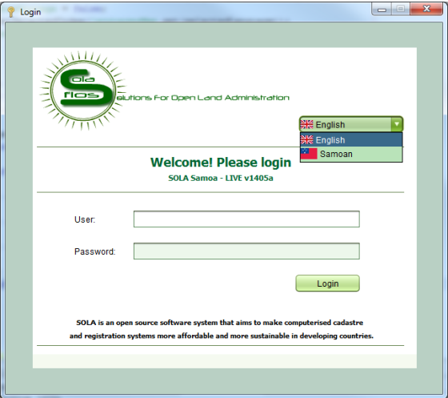

The SOLA Desktop supports both the English and Samoan languages for display of labels, messages and reference values. To change the language, select your preferred language on the SOLA Desktop Login screen. You will need to restart the application to complete the change.

Login Change Language